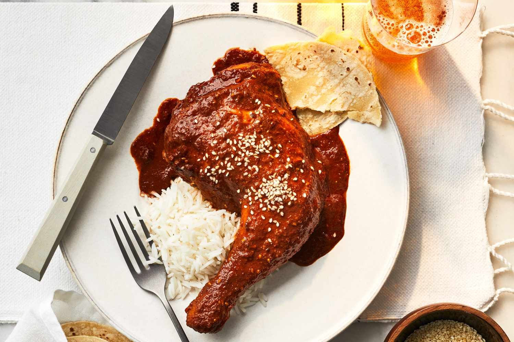

Chicken Mole

Description
Mole is a layered, flavourful sauce which is cooked over long
periods of time to form a perfect accompaniment to chicken, rice
or really anything you want to serve it with!
Ingredients
(For 10 servings)
For Chicken
- 2 tbls. olive oil
- 5 pounds chicken
- 3 cups chicken broth homemade
- 3 cups orange juice
For Mole
- 1 tbls. olive oil
- 2 medium onions chopped
- 1/4 cup pumpkin seeds
- 1/3 cup sliced almonds
- 8 cloves garlic sliced
- 4 tsp. cumin seeds
- 4 tsp. coriander seeds
- 1 tsp. whole anise seeds
- 4 whole cloves
- 5 oz. dried pasilla chiles stem removed, in 1 inch pieces, rinsed
- 1 oz. dried ancho chiles stem removed, in 1 inch pieces, rinsed
- 1 oz. dried chipotle chiles stem removed, in 1 inch pieces, rinsed
- 1 cinnamon stick
- 2 bay leaves
- 1/2 cup raisins
- 1 tsp. dried majoram
- 1 tsp. dried thyme
- 2 tsp. dried oregano
- 2 tbls. tomato paste
- 3.1 oz. dark Mexican chocolate chopped
- Fresh cilantro chopped, garnish
Steps
Chicken
- Heat a Dutch oven on medium-high heat. Add olive oil, and allow to heat. Being careful not to crowd the pan, saute the chicken breats until browned on both sides, about 3-4 minutes. Move done chicken to a seperate bowl, and replenish oil when necessary.
- Return chicken and juices to Dutch oven. Add chicken broth and orange juice, then bring to a boil. Reduce to low and simmer covered until chicken is done. About 25 minutes.
- Carefully remove chicken to a clean bowl and shred. Reserve broth for use later.
Mole
- Heat the olive oil in a separate large, heavy-bottomed saucepan over medium-high heat. Add the onions and sauté until golden brown and just starting to caramelize, approximately 12 minutes, stirring frequently. Reduce medium heat. Add the pumpkin seeds, sliced almonds, garlic, cumin seeds, coriander seeds, whole anise seeds, and whole cloves to the saucepan. Sauté for 1-2 minutes, until garlic becomes fragrant, stirring continuously.
- Add the dried chiles to the pot and stir to combine. Sauté for approximately 2-3 minutes or until chiles start to soften.
- Grab the reserved chicken and orange juice broth and carefully pour the liquid into the saucepan with the onion and chiles. Reserve pot for later. Add the cinnamon stick, bay leaves, raisins, marjoram, thyme, and oregano to the saucepan and mix well. Bring to a low boil, cover, and reduce to a simmer. Cook until chiles are very soft, approximately 30-35 minutes.
- Stir in the tomato paste and cook for an additional 1-2 minutes. Remove from heat. Add the chocolate. Allow sauce to cool for 10 minutes and the chocolate to melt.
- Working in batches, transfer sauce mixture to the bowl of a blender and puree until smooth. Avoid overfilling. Transfer mixture to the reserved pot. Repeat until all sauce is processed. Season with salt and pepper, to taste.
- Combine shredded chicken with about half of the sauce mix. Reserve the rest for later use.
- Serve warm with tortillas and beans and garnish with cilantro and pumpkin seeds.
- Enjoy!